微积分与微分方程
按知识依赖重组 · 配有概念、推导与讲解型例题
版本：2026-11-19-daily-02 · 扩充修订阅读版
历史图片未重读的细节不作为已核实原题
本册目录
导读
微积分处理两类互相联系的问题。第一类是：已知一个函数，怎样描述它在某一点附近变化得多快，这引出导数；第二类是：已知一个量的变化规律，怎样恢复这个量的整体，这引出积分。极限是两者共同的基础，它把“无限接近”变成一个可以精确使用的概念。导数是函数在局部的线性变化系数，积分把许多局部的小贡献累加成整体，微分方程则把一个未知函数与它的变化率联系在一起，让我们从变化规律出发求出函数本身。
本册沿着这条依赖关系编排：先讲函数与极限，再讲导数及其应用，然后讲积分、级数和泰勒公式，最后讲多元微分、微分方程和变分。多元微分与变分放在后面，是因为它们分别要用到单变量的链式法则和分部积分。
计算时要始终注意三件事：定义域、趋近的方向、初始条件。形式相似的符号可能描述完全不同的对象：数列通项的极限不是部分和的极限，偏导数不是沿运动轨迹的总导数，满足变分方程的曲线也不一定是使泛函最小的曲线。
第一章 函数、图像与基本模型
1.1 函数由对应法则与定义域共同确定
研究变化之前，要先弄清哪些量可以变化、哪些量由它们决定。函数把定义域中的每个输入对应到唯一的输出。一个函数由两部分共同确定：对应法则（公式）和定义域。只有公式而没有定义域，并不足以确定一个函数。例如 在全体实数上不是一一对应的（ 与 对应同一个值），但限制在非负半轴上就是一一对应的，能否建立反函数也随之改变。值域是函数实际取到的输出值的集合，不要与题目事先给出的可能输出范围相混淆。
建立数学模型时，自变量不一定是时间。温度可以是空间位置的函数，成本可以是产量的函数，势能可以是位移的函数。先把自变量、因变量和参数区分开，导数的含义才明确。参数在同一个模型中通常保持不变，但可以比较不同参数值对应的一族函数。例如 中， 是变化的输入， 是给定的斜率；如果对 求导，研究的已经是另一种变化。
例题：由定义域决定能否计算。 对 ，平方根要求 ，分母要求 ，所以定义域是 。在 处函数有定义，但只能从右侧研究它附近的变化；在 处函数没有定义，讨论这里的极限时也必须分别考察左右两侧的符号。定义域不是做完题后补上的一句限制，它决定了哪些趋近方式和变形有意义。
俄语课程把这一点写成正式定义。函数 由三样东西给定：定义域（область определения），即使 有意义的全部实数 ；值域（область значений），即函数实际取到的全部 ；以及对应法则，并且每个 只能对应唯一一个 ，单值性是函数定义的一部分。函数有三种常用的表示法：解析法用公式给出，如 ，此时定义域需要从公式求出，这里是 ；图像法给出平面 上点 的集合；表格法列出部分 及对应的函数值。
由公式求定义域。 只给出公式时，约定定义域是使公式中每一步运算都有意义的全部实数。按函数的类型，限制条件分别是：
- 多项式 ：没有限制，。例如 与 都在全体实数上有定义。
- 分式有理函数 ：分母不为零，。例如 的定义域为 。
- 偶次根式 ：根号内非负，。奇次根式 没有额外限制，，因为负数也有奇次实根。
- 指数函数 （）：指数位置可以是任意实数，，例如 的定义域为 。
- 对数函数 ：真数严格为正，，不能取等号。
- 三角函数：、 的定义域为 ； 要求 ，即 ； 要求 ，即 ，。俄语教材把正切、余切写作 、。
- 反三角函数：、 要求 ； 的定义域为 。
公式由几种运算组合而成时，各条限制同时成立，定义域取它们的交集，前面的例题 就是根式与分式两条限制的交集。
讲解例：根式与对数的端点。 要求 ，定义域为 ； 要求 ，定义域为 。两者只差端点 ：对数在该点无定义，所以用开区间；根式在该点取值为零，所以用闭区间。俄语和法语教材常把开区间端点的括号反写， 即 ， 即 。
绝对值与距离。 求定义域、解不等式和讨论极限时，经常要处理绝对值。 是数轴上点 到点 的距离，所以 是到 的距离。设 ，由距离的意义立即得到三条规则：
第二条是以 为中心、半径为 的闭区间，第三条是两条射线的并。在数轴上表示时，等式只标两个实心点， 画两点之间的线段， 画向两边延伸的两条射线，带等号时端点为实心，严格不等号时端点为空心。当右端为负数时，绝对值恒非负， 与 无解， 对一切 成立； 时 只有 一个解。
讲解例：绝对值不等式的区间形式。 解 ：这是到 的距离不超过二，所以 ，区间为 。解 ：到 的距离不小于三，所以 或 ，区间为 。验算：取 ，，属于第一个解集；取 ，，不属于第二个解集，与区间一致。 无解， 的解集是 。
这三条规则正是第二章极限定义中 与 的几何含义：前者是以 为中心的一个小区间，后者是以 为中心的一条横带。
1.2 图像变换与复合
若 ，则 的图像是把 的图像向右平移 、向上平移 得到的。自变量内部的变化方向容易与直觉相反：新图像在 处取得原来的 ，所以是向右移动，而不是向左。 改变横向的尺度（ 时横向压缩）， 改变纵向的尺度，两者不能混淆。负号还会造成反射： 关于 轴对称， 关于 轴对称。
俄语课程把图像的基本变换归纳为平移、伸缩、对称和“对称翻倍”（раздвоение отражением）四类。下面设 、，每一条都以 或 为例：
- ：图像向上平移 ； 向下平移。例如 是抛物线下移四，顶点 。
- ：图像向左平移 ； 向右平移。例如 右移四， 左移四。
- ：横向压缩为原来的 。 时向 轴收拢， 时横向拉宽。
- ：纵向拉伸为原来的 倍，与 轴的交点不动。例如 的顶点为 ，零点仍为 。
- ：先提出 ，写成 ，即先横向压缩 倍，再平移 。平移量是 而不是 。
- ：关于 轴翻转。例如 ，是 的镜像。
- ：关于 轴翻转。例如 开口向下，顶点 。
- ： 轴上方的部分保留，下方的部分翻到上方。
- ：保留 的右半部分，并把它对 轴镜像到左边，原来的左半部分舍去。结果总是偶函数。
- ：保留 的上半部分，并把它对 轴镜像到下方，原来的下半部分舍去，等价于 且 。
- ：等价于 或 ，图像是 与它关于 轴的镜像合在一起。
规律是：改动括号内自变量的变换（第 2、3、5、6、9 条）作用在横向，方向与式子的符号相反；改动括号外函数值的变换（第 1、4、7、8 条）作用在纵向，方向与式子的符号一致。第 9 条和第 10 条只是“镜像”的对象不同：前者镜像右半平面，后者镜像上半平面。
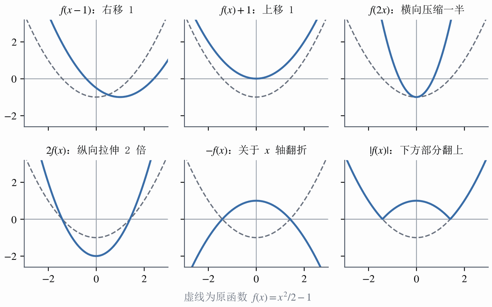
讲解例：先提系数再平移。 ，顶点在 ，开口比 窄；，顶点在 ，开口变宽。若误把 当作“压缩后右移四”，顶点会错放到 。再看 ：横向压缩二倍、右移一、下移四，顶点 。验算： 时 ，与顶点一致。
讲解例：绝对值翻折的三种情形。 由 出发： 把 一段翻到上方，在原点处形成顶点为 的驼峰。 保留 的右半支并镜像，得到 W 形，最低点为 ，在 处取局部极大值 16；而 的右半支 在 上递增，镜像后得到 U 形，最低点为 。 只在 处有图像，上下各一支，即 。
讲解例：。 写成 ，依次使用第 9、10 条：先画 在 的部分；按第 9 条镜像到左边，得到屋顶形折线 ；再按第 10 条，只保留 轴上方即 的部分，并镜像到下方，得到顶点为 、 的正方形。判断不等式取哪一侧时，代入一个不在边界上的点：原点使 成立，所以 是包含原点的正方形内部连同边界， 是外部连同边界。边界上的点满足等号，画成实线。
复合函数 ，即 ，先执行内层的 ，再执行外层的 。它的定义域不仅要求 有意义，还要求 的值落在 的定义域内。例如 要求 ，定义域为 。先看清函数的分层结构，后面求导时就能逐层乘上各层的变化率，而不是把整个公式看成无法拆开的整体。
例题：复合顺序影响定义域。 取 、。，要求 ；，要求 。在 处两式的值都是零，但在 处分别为 和一。不能因为在某一点的值相同，就认为两个函数相同。
函数的几个基本性质在后面反复用到：若 ， 是偶函数，图像关于 轴对称；若 ， 是奇函数，图像关于原点对称；若存在 使 对一切 成立， 是周期函数。这些性质可以大大简化积分计算（见 4.7 节）。
奇偶性的定义包含两个条件，第一个常被遗漏：定义域必须关于原点对称，即 时 ；在此前提下，才比较 与 。例如 的定义域为 ，不关于原点对称，所以既不是奇函数也不是偶函数，不必再计算 。验证时把 换成 代入： 与 满足 ，是偶函数； 与 满足 ，是奇函数； 两条都不满足，是非奇非偶函数。
1.3 反函数、指数与对数
在一个区间上严格单调的函数，可以建立反函数。反函数把输入与输出互换，图像与原函数关于直线 对称。注意反函数 不是把函数值取倒数 。指数函数 在全体实数上严格递增，值域为全体正数，因此它的反函数 只对 有定义。对数把乘法变成加法：；但 一般不等于 。
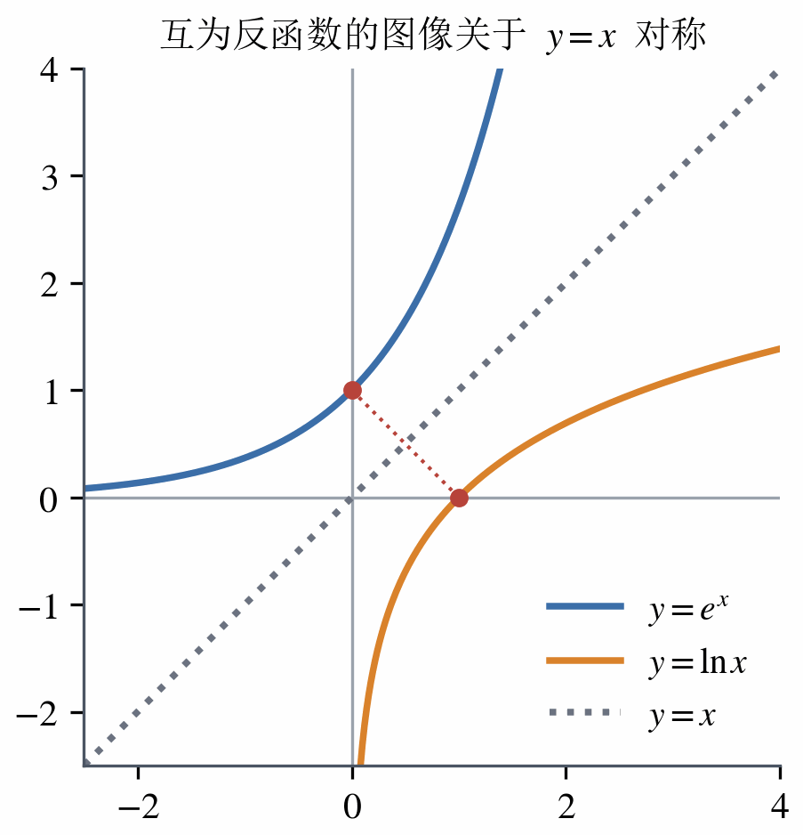
求反函数的步骤是：
- 确认函数在所考虑的区间上严格单调，从而一一对应。
- 从 中解出 ，得到 。
- 按习惯把自变量仍记作 ，交换字母得 ，原函数的值域成为反函数的定义域。
例如 在 上严格递增，两边取以二为底的对数得 ，交换字母得反函数 ，定义域为 。原函数过点 ，反函数过点 。两图像关于直线 对称的理由是：点 在 上，等价于 ，也等价于 ，即点 在 上；而 与 的连线垂直于 ，中点 落在 上，两点关于这条直线对称。
在物理模型中，指数函数的自变量应当是没有单位的数。例如衰减规律 中， 和 都以时间为单位，它们的比值才能放进指数。对数同样应当作用于无量纲的比值，如 。单位检查不只是书写规范，它还能帮助发现公式中漏掉的时间常数、频率或参考量。
三角函数的自变量同样应当以弧度为单位。弧度由弧长与半径之比定义，正是这种定义使得小角度时 与 之比趋于一，导数公式才具有最简单的系数。如果把六十度直接当作数六十代入泰勒公式，就改变了函数输入的单位，结果完全错误。
双曲函数。 由指数函数组合出的双曲正弦与双曲余弦
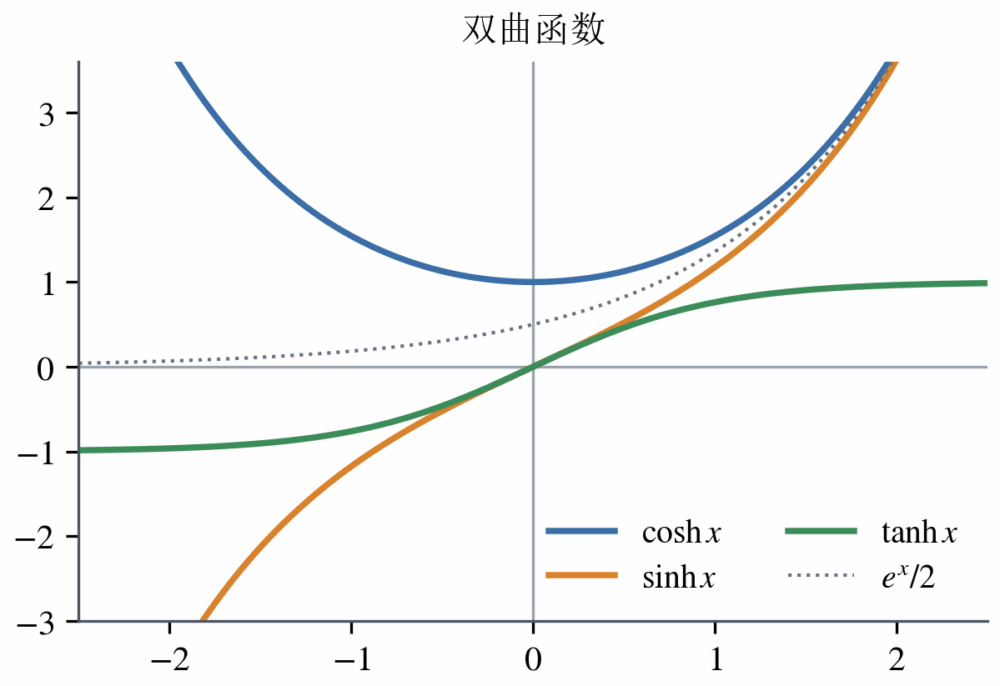
在悬链线、相对论和微分方程中经常出现。它们满足与三角函数相似的关系，导数为 、，注意第二式没有负号。
第二章 函数与极限
2.1 极限描述趋近而非到达
数列 收敛到 ，是指：任给一个正数 （无论多么小），都存在一个整数 ，使得当 时，。通俗地说，只要 足够大， 与 的距离可以小于任何事先指定的误差。例如 ：对给定的 ，选 ，则 时 ，所以极限为零。注意，对每个有限的 ， 都大于零；极限为零并不要求某一项真的等于零，它描述的是趋近，而不是到达。
数列及其表示。 数列（последовательность）是定义在自然数集 上的函数：每个序号 对应一个数 ，记作 ， 称为通项（общий член）。因为自变量只取正整数，数列的图像不是连续曲线，而是一列孤立的点 。数列常用两种方式给出：
- 通项公式：直接写出 与 的关系，如 给出 ， 给出 。给定 可以立即算出第 项。
- 递推公式（рекуррентная формула）：给出首项和由前一项求后一项的规则。等差数列 、 依次为 ，求第 项要一步步推下去；对等差数列也可以化成通项 ，验算 。
数列极限的定义可以用量词写成
即从第 项以后，所有的项都落在区间 内。极限为有限数的数列称为收敛数列（сходящаяся），否则称为发散数列（расходящаяся）。 趋于 ，有时写作 ，但 不是数，这个数列仍属发散。
讲解例：用定义证明数列极限。 证明 。任取 ，先化简差值：
要使 ，只需 ，即 。取 （它大于 且为正数），当 时不等式成立，所以极限为 1。验算： 时 ，取 ，。
讲解例：有界而发散的数列。 讨论 。依次代入 得 ，四项一循环。假设极限 存在，取 ，则从某项以后所有项都满足 。但 1 和 都会在后面无限次出现，由三角不等式
得出 ，矛盾，所以极限不存在。这个数列满足 ，是有界的，可见有界不一定收敛。
数列极限是函数极限的特殊情形：数列 只是把 的自变量限制在正整数上。因此若 ，必有 ；反过来不成立。例如 在整数点上恒为零，数列极限为 0，而 时函数在 与 1 之间不断振荡，函数极限不存在。
函数极限 的含义类似，只是把“ 大于某个指标”改成“ 与 足够接近，但不等于 ”。因此，函数在 处的极限与 是否有定义、等于多少无关。双侧极限存在，要求左极限与右极限都存在且相等；若函数只在 的一侧有定义，就应明确使用单侧极限。
邻域与去心邻域。 描述“足够接近”要用邻域。点 的 邻域是以 为中心、半径为 的开区间，去心 邻域（проколотая окрестность）是把中心点挖掉后剩下的部分：
例如 、 时，。不等式 正是 的另一种写法。函数极限只关心 靠近 时 的表现，不关心 本身，所以定义中用的是去心邻域； 在 处没有定义，但在去心邻域内可以约分为 ，极限仍为 2（见下面的例 1）。 与 分工不同： 先给定，衡量函数值离极限多近； 后找，衡量自变量离 多近，它依赖于 ，有时写作 。
柯西定义。 把“足够接近”写成精确的不等式，就得到函数极限的柯西定义（определение предела по Коши），也称 - 定义：，当且仅当
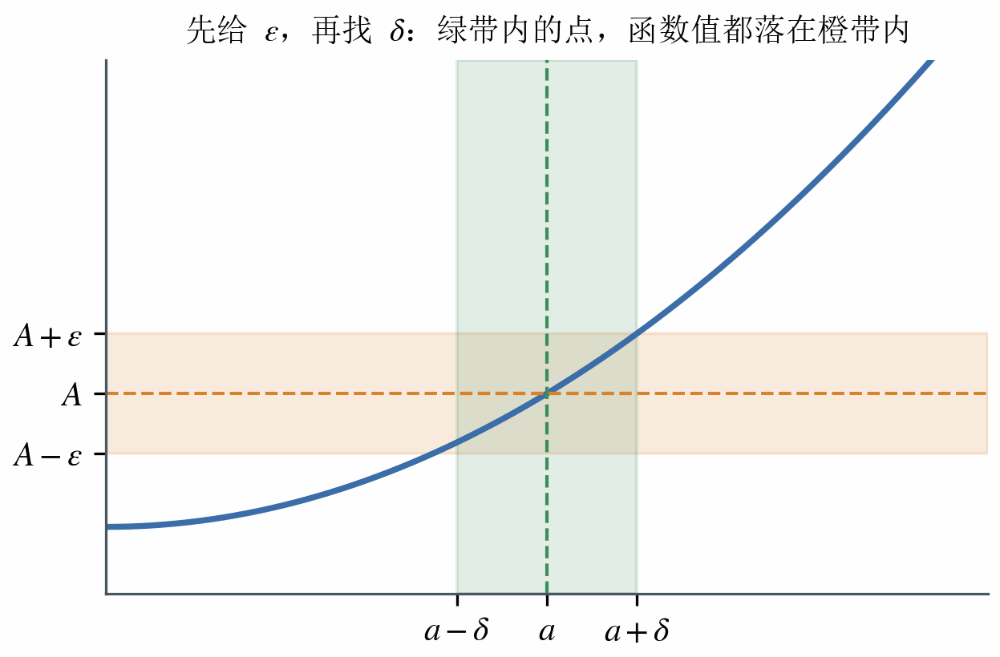
符号 读作“对任意”， 读作“存在”。（эпсилон）是允许 偏离 的误差，（дельта）是 离 应有多近。由 1.1 节的距离含义， 是以 为中心、宽 的一条横带， 是以 为中心、宽 的竖带去掉中心一点。定义说：无论横带多窄，总能找到一条竖带，使函数图像在竖带内（中心点除外）的部分全部落在横带里。条件 排除了 本身，所以极限与 无关。可以把它理解为一场挑战：对方任意给出 ，我方必须回答一个可用的 ；只要对每个 都能回答，极限就是 。
需要这样严格的定义，是因为“越来越接近”不足以作为证明的依据。 时， 与 5 越来越接近，与 5.5 的距离也在缩小，直觉说法无法区分这两个数；定义要求误差可以任意小，5.5 在 时就无法满足，只有 5 能通过。又如 在 时于 与 1 之间无限次振荡，无论猜测哪个 ，取 时，任何竖带内都有使 和 的点，二者不能同时落在宽为一的横带里，所以极限不存在。
定义的符号形式与否定。 用去心邻域，柯西定义可以完全写成逻辑符号：
量词的顺序不能交换：先任给 ，再找 。要说明 不是极限，按逻辑学中否定量词的规则，把每个 换成 、每个 换成 ，最后的不等式取反：
读作：存在某个误差 ，无论 取多小，邻域内总有点使 离 至少 。上面 与 的论证都是这一形式。由同样的思路可以证明极限唯一：若 都是极限，取 ，两个极限的 邻域不相交，而 足够接近 时 必须同时落在两个邻域里，矛盾。
用定义证明极限的一般步骤是：
- 化简 ，设法写成 乘以某个因子。
- 若因子是常数 ，由 解出 ，取 。
- 若因子随 变化，先限制 （或别的固定数），在这个范围内给因子找一个上界 ，再取 。
- 也可以直接从 解出 的范围，目标只是得到形如 的充分条件，不要求先化为一次式。
讲解例：一次函数。 证明 。，要使它小于 ，只需 ，取 。验证： 时 ，取 ，，。一般地，（）可取 。 不唯一，比它更小的正数同样可用；常数函数则任取 都行，因为 恒为零。
讲解例：开方解出 。 证明 。 等价于 ，而 ，取 即可。这里没有把式子化成一次，而是直接解出了 的范围。
讲解例：先限制范围再放缩。 证明 。分解得 ，因子 随 变化，不能直接除掉。先约定 ，则 ，，于是
只要 ，即 ，原式就小于 。两个条件都要满足，取 。验证： 时 ，取 ，。这一步叫放缩，方向必须是放大：先证明一个更大的量小于 ，原式自然也小于 ；若把原式缩小，较小的量小于 推不出原式小于 。上界也不必精确， 在 4 附近，放到 5 只是使 保守一些。限制 不能省：若 而只取 ， 可以取到 21，此时 ，“小于 5”的估计就不成立了。
例1：约去因子与补成连续函数。 对 ，原定义域不包含 。当 时，把分子分解为 ，约去后得 ，所以 。约分并没有让原函数在 处自动获得定义；只有另外规定 ，才得到一个在该点连续的新函数（称为连续延拓）。这种区分在处理含参数的分式和积分中的可去间断点时同样需要。
2.2 连续与基本求极限方法
函数在 点连续，要求同时满足三条： 有定义； 存在；二者相等。不满足其中任何一条的点称为间断点。间断点可分为几类：极限存在但不等于函数值（或函数无定义）的称为可去间断点，如例 1；左右极限都存在但不相等的称为跳跃间断点；至少一侧极限不存在的（如趋于无穷或振荡）称为第二类间断点。
连续函数在闭区间上有两条重要性质：一定能取到最大值和最小值（最值定理），并且能取到最大值与最小值之间的每一个值（介值定理）。区间不闭合时，这些结论不一定成立，例如 在开区间 上取不到最大值。
求极限时，先看能否利用连续性直接代入。若代入后得到 或 ，只说明当前的形式无法判断结果，称为未定式，并不是答案。这时可以尝试因式分解、有理化（乘共轭式）、夹逼、等价无穷小替换、洛必达法则或泰勒展开。若分母趋于零而分子趋于非零的数，则不是未定式，结果是无穷大，但要检查左右两侧的符号。
例2：有理化揭示最低阶。 求 时 的极限。定义域为 ，零的两侧都有定义。分子分母同乘以共轭式 ，分子变为 ，得到
右边在零处连续，直接代入得极限为二分之一。这个结果还说明， 很小时 比一大约 ，为后面的局部线性化做了准备。
含无穷的极限运算与不定式。 设 时 、， 为有限数。下面的式子是简写，意思是“一个趋于无穷的量与一个趋于 的量作运算，结果趋于什么”，并不是把 当作普通的数来计算：
同号无穷之和仍为无穷：，。乘除时结果的符号按通常的符号法则确定， 一类还要分别看分母从哪一侧趋于零。不能确定结果的四种基本形式称为不定式（неопределённости）：
此外还有 、、 三种幂的形式。“不定”指单看形式，结果可以是任何值。同为 时的 ，，，，取决于分子分母谁更快趋于零；同为 时的 ，，。遇到不定式，需要先用约分、提出最高次项、乘共轭式等方法变形，再求极限。
讲解例：同一函数在三个点的极限。 设 。由 得 或 ，定义域为 。
- ：2 属于定义域，分式在此连续，直接代入得 。
- ：代入得 。求极限时 只趋近于 1 而不等于 1，柯西定义中的 保证 ，所以可以约去：（），极限为 1。
- ：化简后分子为 1，分母趋于零，属于 型，极限为无穷。按原式看符号： 时 、，分母 是趋于零的负数，记作 ，分子趋于 ，得 ； 时分母为趋于零的正数，得 。这与 的左右极限一致。
与 都不在定义域内，性质却不同： 与 只在 这一点不同，在那里留下一个“空心点”，极限有限，是可去间断点； 处两侧趋于符号相反的无穷，是第二类间断点。
讲解例：乘共轭式。 求 。代入得 。根式之差不能直接分解，分子分母同乘共轭式 ，利用 ，分子变为 ，于是
验算：取 ，分子约为 ，分母为 ，比值约 ，与 相符。
讲解例：分子分母各乘共轭式。 求 ，代入为 。分子、分母都含根式之差，各乘自己的共轭式；为不改变分式的值，两个共轭式都要上下同乘。分子得 ，分母得 ，于是
同样的做法求 。代入为 。分子乘 得 ，分母乘 得 ，约去公因子 ：
验算： 时分子约 ，分母约 ，比值约 0.500。
讲解例： 型先通分。 两个分式之差在同一点各自趋于无穷时，先通分化为一个分式，再判断类型。
- 求 。由 ，通分得 。分子 ，约去 得 。验算： 时原式约为 。
- 若第二项分母换成 ，即求 ，通分得 。分子趋于 ，分母趋于 0，不再是未定式，结果为无穷： 时分母为正，原式趋于 ； 时分母为负，原式趋于 ，没有有限极限。若取两分母之积 为公分母，分子为 ，一次项是 ，约去 后结果相同。
两题形式只差一个指数，结果完全不同：第 1 题通分后分子含有因子 ，可以与分母相消；第 2 题分子在 处不为零，没有可消的因子。
2.3 极限运算法则与夹逼的作用
若 和 都存在且有限，则和、差、积的极限分别等于极限的和、差、积；商的极限等于极限之商，但要求分母的极限不为零。这个条件解释了为什么直接代入得到 时不能下结论：商的运算法则的前提不满足，而不是极限一定不存在。无穷大不是普通的实数，不能参与所有代数运算，例如 没有确定的结果。比较 恒为一， 趋于无穷， 恒为负一，它们在形式上都是两个无穷大之差，结果却各不相同。
夹逼定理用于直接计算困难、但容易找到上下界的情形：若在 附近 ，且 和 趋于同一个值 ，则夹在中间的 也趋于 。例如 ：当 时 不断振荡、没有极限，但整个式子被夹在 与 之间，而两者都趋于零，所以原式的极限为零。不能因为乘积中有一个因子没有极限，就断言整个乘积没有极限；也不能把这个例子误解为“零乘以任何量都趋于零”，若另一个因子无界，就需要重新比较增长速度。
收敛数列的性质。 设 ，，、 为有限数。收敛数列有以下性质：
- 唯一性：一个数列不可能收敛到两个不同的数，证明与 2.1 节函数极限的唯一性相同。
- 有界性：收敛数列一定有界。取 ，从某项 以后都有 ，前面只有有限项，取它们的绝对值与 中最大者即为界。逆命题不成立，2.1 节的 有界而发散。
- 四则运算：，，； 时 。前提是两个数列各自收敛。、 都发散， 却收敛，此时不能写成 ，因为 没有意义。
- 保序性：若从某个序号起 ，则 。严格不等号取极限后可能变成等号：对一切 有 ，取极限却得 ，所以只能由 推出 。特例： 且收敛，则 。
- 夹逼：若 ，且 ，则 。俄语课程常称为“两个警察定理”（теорема о двух милиционерах）。
例如 ；求 时分子分母都发散，不能直接用商的法则，先同除以 得 。
不求极限值的收敛判别。 用定义判断收敛，要先知道极限 是多少。下面两个准则只看数列本身。
柯西准则（критерий Коши）：数列 收敛的充分必要条件是
即从某项以后，任意两项之间的距离都可以任意小。满足这一条件的数列称为基本列（фундаментальная последовательность）。以调和数列 为例，取 ：
右边共 项，每项都不小于最后一项 。对 ，不论 取多大，都有 使 ，柯西条件不成立，所以调和数列发散，这也就是第五章调和级数发散的原因。
单调有界准则：单调递增且有上界的数列必收敛；单调递减且有下界的数列也必收敛。直观地说，数列一直上升，又有一个上界挡着，只能越来越靠近某个数。例如 ：
单调递增，又有 ，所以收敛。这一条件是充分的，不是必要的： 不单调，却收敛到 0。
由单调有界准则得到 。 考察 。由二项式定理，
共 项，每项都是正数。
- 单调递增： 增大时，每个括号 变大，项数又多了一项，所以 。
- 有上界：把每个括号放大为 1，再用 （），得 。
所以数列收敛，它的极限定义为自然常数 。再取 ，把 夹在 与 之间，两端都趋于 ，由夹逼即可把结论从整数 推广到实数 。
两个重要极限。 下面两个极限是推导大量公式的基础：
第一个可以用夹逼定理证明：在单位圆中， 时，比较三角形与扇形的面积，得到 ，两边同除以 再取倒数，得 ，而 。第二个极限定义了自然常数 ，它的一般形式是 ，凡遇到“”型的未定式，都可以化成这个形式。
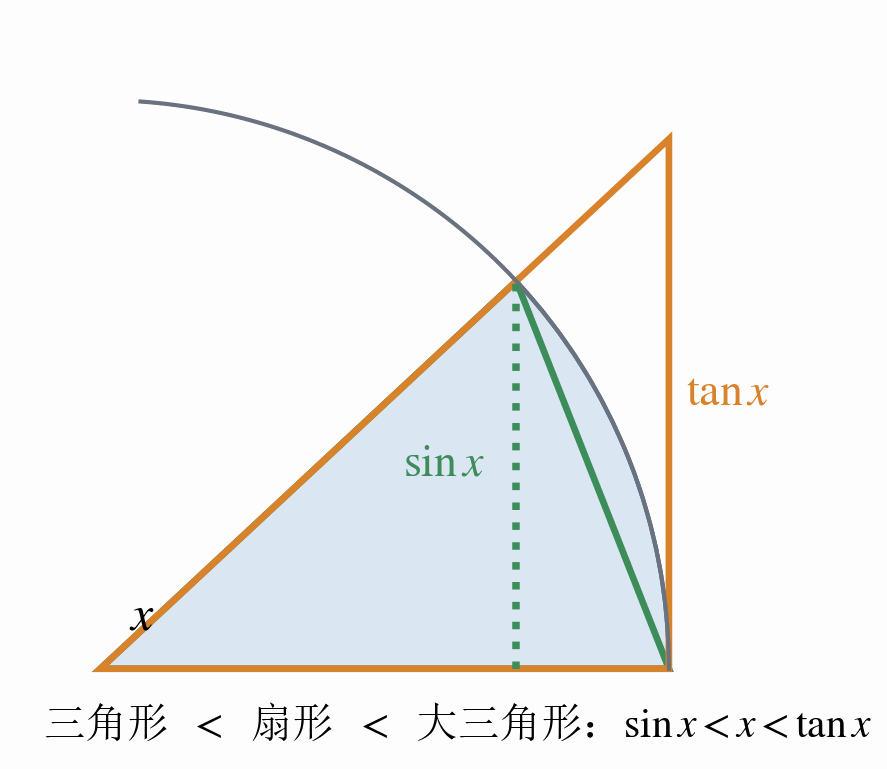
第一个重要极限的完整推导。 在单位圆中取圆心角 （弧度），。设 为圆心， 为 轴上的点 ， 为圆上对应角 的点，过 作切线交 的延长线于 。三角形 底为 1、高为 ；扇形 半径为 1、圆心角为 ；三角形 底为 1、高为 。三者依次包含，面积满足
同乘 2 后除以 （此时 ，不等号方向不变），得 ；三项都为正，取倒数后不等号反向：
时 ，由夹逼得右极限为 1。又 ，函数是偶函数，左极限也为 1，所以双侧极限为 1。推导用到“扇形面积等于 ”，它只在弧度制下成立；若 以度为单位，同一极限等于 。
由它得到几个常用推论：
第二式中令 ， 时 。一般地，只要 ，就有 ：正弦里面是什么，分母就凑成什么。
第二个重要极限的两种写法。 在 中令 ， 时 ，得到等价写法 。使用时把底数写成“1 加一个趋于零的量”，指数凑成这个量的倒数：
型的计算公式。 设 、，则
推导分三步：
- 记 ， 时 ，于是 。
- 指数先乘 再乘 ，值不变：。
- 方括号内趋于 ，外面的指数为 ，所以 。
也可以取对数理解：，而 时 ，故 与 的极限相同。使用公式的前提是先确认属于 型：底数趋于 2 而指数趋于无穷时不能使用。若算出的指数极限为 或 ，结果分别为 或 0。
讲解例： 型。 下面各题的底数都趋于 1、指数都趋于无穷，按“先求 ，再求 的极限”计算。
- ：，结果 。用凑指数的写法，，结果相同。
- ：底数拆成 ，，结果 。
- ：，，结果 。凑指数时把 写成 ，多出的因子 ，也得 。
- ：，，结果 。
- ：，，结果 。这里两个负号相乘为正，最容易误写成 ，应先化掉负号再取极限。
- ：，，结果 。
验算第 4 题： 时 ，与 一致。
等价无穷小。 若 、，且 ，称 与 是等价无穷小，记作 。当 时，常用的等价关系有
它们都可以由两个重要极限或泰勒展开（第六章）得到。在乘除结构中，可以用等价无穷小替换以简化计算；但在加减结构中替换可能出错，6.2 节将说明原因。
无穷远处的有理函数，可以比较分子分母的最高次幂。例如 ，分子分母同除以 后，各小项趋于零，所以在正负无穷远处都趋于 。若分子次数高于分母，结果趋于无穷，但还要进一步判断它的符号与趋向，不能只写一个不带符号的“无穷”。
这种做法俗称“抓大头”，只适用于 时的 型； 趋于有限点的 型要用因式分解或乘共轭式。理由是 很大时最高次项远远压过其余各项，例如 时 。设 、 是最高次数分别为 、 的多项式，，分子分母同除以 即得
书面解答应写出“同除以最高次幂、各小项趋于零”的过程，不能只写结论。含根式时，先把根号内的最高次项提出根号：，在 时等于 ，在 时等于 ，所以两个方向要分开计算。
讲解例：根式中的最高次项。 求 。根号内提出 ：
时 ，分子分母约去 ，得 。若 ，，极限为 。验算： 时原式约为 ， 时约为 。
讲解例：根式与一次式之和。 求 。 时 ，分子分母都提出 ：
时 ，极限变为 。验算： 时原式约为 ， 时约为 ，两个方向的结果确实不同。
渐近线。 极限可以用来描述函数图像在远处或间断点附近的走向。若图像上的点沿曲线趋于无穷远时，它到某条直线的距离趋于零，这条直线称为渐近线（асимптота）。渐近线分三种：
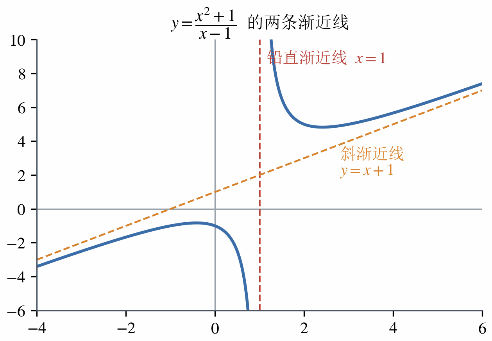
- 垂直渐近线（вертикальная）：若在某点 处左极限或右极限中至少有一个为 ，则直线 是垂直渐近线。应在分母为零的点和定义域的边界点处寻找，例如 在 处。
- 水平渐近线（горизонтальная）：若 或 ， 为有限数，则直线 是水平渐近线。
- 斜渐近线（наклонная）：直线 ，其中
要求 、 都存在且有限。 时斜渐近线退化为水平渐近线。
斜渐近线公式的来历：若 ，两边除以 得 ，而 ，所以 ；知道 后，由原式直接得 。求渐近线的步骤是：
- 求定义域，在间断点和定义域边界处求单侧极限，找出垂直渐近线。
- 分别对 与 求 与 ，两个方向的结果可能不同，要分开计算。
- 有理函数可用次数快速判断：分子次数不高于分母时有水平渐近线，分子次数恰好比分母高一次时有斜渐近线，高两次及以上时既无水平也无斜渐近线。
讲解例：三类渐近线。
- 。 时分子趋于 ，分母是趋于零的负数，； 时 ，所以 是垂直渐近线。又 ， 是水平渐近线。注意单侧记号写作 ，不要写成上标在左边，否则容易误读为 。
- 。 是垂直渐近线。，，斜渐近线为 ；两个方向结果相同。
- 。 是垂直渐近线， 时趋于 ， 时趋于 。求斜率时要除以 ：
而不是乘以 ；误算成 就会得出错误的斜率 1。再求 ，渐近线是 ，即水平渐近线，没有斜渐近线。这与次数判断一致：分子 0 次、分母 1 次。
2.4 洛必达法则
对 或 型的未定式，若 和 在 附近可导，，且 存在（或为无穷），则
注意是分子分母分别求导，而不是对整个分式用商的求导法则。它的道理可以从局部线性化理解：在 附近 ，，比值约为 。例如 是 型，求导一次得 ，仍是 型，再求导一次得 。
使用洛必达法则有三点要注意：
- 每次使用前都要确认仍是 或 型，不是未定式时不能用。
- 若 不存在，不能推出原极限不存在，只说明这个方法失效。例如 在 时极限为一，但求导后的 没有极限。
- 其他未定式要先变形： 型写成分式； 型通分；、、 型先取对数，化为 型。
求极限的一般步骤是：
- 判断类型：直接代入，若得到确定的值（含无穷），就是答案。
- 若是未定式，先做代数化简：因式分解、约分、有理化、通分。
- 在乘除因子中用等价无穷小替换；涉及加减相消时改用泰勒展开到足够的阶。
- 仍无法判断时，使用洛必达法则，每次使用前重新确认未定式类型。
- 对含振荡因子的式子，考虑用夹逼定理。
- 必要时分别求左右极限，比较是否相等。
2.5 连续性定理怎样帮助求解方程
介值定理保证：闭区间上的连续函数，能取到两个端点函数值之间的每一个值。特别地，若 （两端异号），则在 与 之间至少有一个零点，这称为零点定理。但它不保证零点唯一；要证明唯一性，还需要严格单调等额外条件。二分法正是反复保留两端异号的那一半区间，使区间长度不断减半，从而逼近零点。
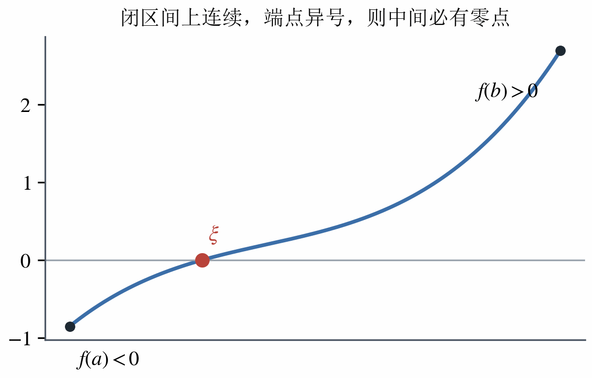
例题：存在性与唯一性分开证明。 对 ，有 、，由零点定理，零到一之间有根。导数 处处为正，所以函数严格递增，最多只有一个根。两方面合起来，恰有一个根。若只知道两端异号，区间内可能有三个甚至更多个零点，不能把零点定理当作唯一性定理。数值逼近时，第一次取中点二分之一，函数值为 ，为负，所以根在二分之一到一之间；再取四分之三，函数值为 ，为正，根缩小到二分之一到四分之三之间。每一步保留的都是一个确实包含根的区间。
第三章 导数、微分与局部线性化
3.1 从平均变化到瞬时变化
函数在点 的导数定义为
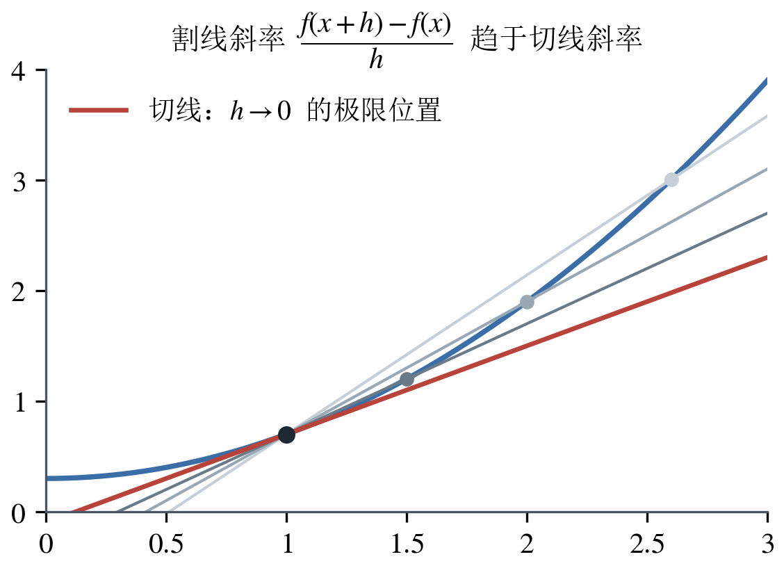
分子除以 的差商，是函数在区间 上的平均变化率；让 趋于零，若极限存在，就得到瞬时变化率。几何上，导数是曲线在该点切线的斜率；物理上，位移对时间的导数是速度。
可导一定连续，因为 可以写成差商乘以 ，差商趋于有限值而 趋于零，乘积趋于零。但连续不一定可导，例如 在零处连续，而左右两侧的斜率分别为负一和一，不相等，所以不可导，图像在那里有一个尖角。
例4：从定义求平方函数导数。 对 ，有
令 ，得到 。精确的增量为 ，其中 是关于 的线性部分，剩下的 与 相比趋于零。这就是微分表达式 的来源：微分是增量的线性主要部分，给出一阶近似，并不总等于有限的增量。由此得到常用的近似公式 ，称为局部线性化。
3.2 运算法则与复合函数
乘积的求导法则可以这样推导：在 中加上再减去一个中间项 ，把它分成 与 两部分，除以 后取极限，得到 。商的求导法则要求分母不为零；链式法则（复合函数求导）要求内外层函数在相应的点可导：
链式法则的含义是：外层对内层的变化率，乘以内层对 的变化率。复合多层时，就逐层相乘。
例5：逐层求导。 对 ，外层是对数，内层是 ，所以 。再用商的法则求二阶导数：。若漏掉内层的导数 ，会错误地得到零处斜率为一；而原函数是偶函数，图像关于 轴对称，零处斜率应为零，这可以用来检查结果。
高阶导数与莱布尼茨公式。 对导数再求导，得到二阶导数 ，依此类推得到 阶导数 。乘积的 阶导数有类似二项式展开的公式：
例如 ，因为 求导三次后为零，和式中只剩前三项。几个常用的 阶导数是 、、。
隐函数求导。 若 由方程 确定为 的函数，可以把 看成 的函数，对方程两边同时求导，再解出 。例如圆 上，在 的局部，求导得 ，故 。在 处不能除以零，那里切线竖直，换成把 看作 的函数更合适。一般地，隐函数的导数为 （），见 7.3 节。
参数方程求导。 若曲线由 、 给出，在 处
第二式的分母容易遗漏：二阶导数是一阶导数对 的导数，而不是对 的导数。例如椭圆 ，。
3.3 单调性、极值与凹凸
若在一个区间内 ，函数在该区间递增； 则递减。在区间内部可导的极值点处必有 （费马定理），这样的点称为驻点。但导数为零不保证是极值点，例如 在零处导数为零，函数却一直递增地穿过原点。
判断驻点是否为极值点，有两种方法。第一判别法看导数在驻点两侧是否变号：左正右负为极大，左负右正为极小，不变号则不是极值。第二判别法看二阶导数：若 且 ，是局部极小；，是局部极大； 时无法判断，需要再分析。此外，导数不存在的点（如 在零处）也可能是极值点，不能遗漏。
凹凸性与拐点。 二阶导数描述曲线的弯曲方向。在区间内 时，曲线向上弯（称为凹，下凸），切线位于曲线下方； 时向下弯（称为凸，上凸），切线位于曲线上方。曲线弯曲方向改变的点称为拐点，在拐点处 变号。弯曲的程度用曲率衡量：
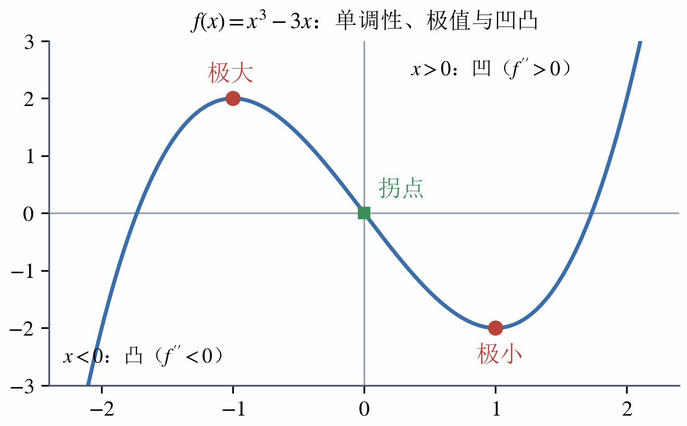
它的倒数 称为曲率半径，是在该点与曲线最贴合的圆的半径。例如半径为 的圆曲率处处为 ；抛物线 在顶点处 、，曲率为二，曲率半径为二分之一。
例6：完整找闭区间上的最值。 令 ，区间为 。导数 在 和 处为零，在三个子区间上的符号依次为正、负、正。所以 是局部极大点， 是局部极小点。再计算端点和驻点处的函数值：、、、。因此全局最大值二在两个点取到，最小值负二也在两个点取到。只看驻点会漏掉同样取到最值的端点。
求闭区间 上连续函数的最值，步骤是：
- 求导数，找出区间内部所有驻点和导数不存在的点。
- 计算这些点以及两个端点处的函数值。
- 比较这些值，最大者为最大值，最小者为最小值。
- 若区间是开的或无界的，还要考察端点附近的极限，判断最值能否取到。
3.4 中值定理连接局部斜率与整体变化
导数只描述一点附近的变化，而单调性涉及区间上任意两点之间的关系。把两者连接起来的是拉格朗日中值定理：若函数在闭区间 上连续、在开区间 内可导，则存在内部某点 ，使
几何上，曲线上至少有一点的切线与连接两端点的弦平行。证明可以先研究端点等高的特殊情形，即罗尔定理：若 ，非恒定的连续函数必在区间内部取得一个高于或低于端点的极值，在那里可导就意味着导数为零。一般情形则把函数减去两端点的连线，得到一个端点等高的辅助函数，由罗尔定理推出中值定理。
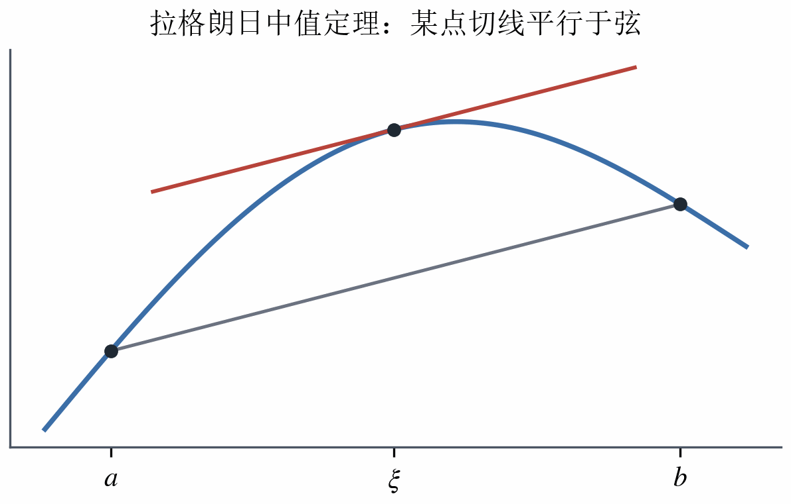
中值定理的一个推广是柯西中值定理：若 满足同样条件且 ，则存在 使 。2.4 节的洛必达法则正是由它证明的。
中值定理立即说明：若在一个区间内导数始终为正，任取 ，有 ，所以函数严格递增；若导数始终为零，则任意两点函数值相同，函数为常数。这里必须是在一个区间上讨论。若定义域被分成互不相连的两段，即使每一点导数都为零，两段上的常数也可能不同。
例题：误差上界来自导数控制。 用 估计 。在四到四点零四之间，平方根的导数为 ，不超过四分之一。由中值定理，函数的实际增量不超过 ，所以精确值在二到二点零一之间。线性近似给出二点零一；二阶导数为负，说明曲线向下弯，切线略高于曲线，近似值偏大。精确值约为二点零零九九七五，与理论预测的误差方向一致。这样的分析比只写一个近似数更能说明近似为何可靠。
3.5 反函数导数与对数求导
若 在一点附近可逆且 ，由 两边求导，得到反函数的导数等于原函数导数的倒数：。非零的条件不能删去，否则反函数可能有竖直切线。例如 虽然可逆，但在零处导数为零，它的反函数 在零处没有有限的导数。
对 ，由 两边对 求导，得 ，故 。这样就把反三角函数的导数化为已知的三角函数导数，它也给出了积分 的原函数。
例题：变量出现在指数中。 对 ，按实函数的常用定义取 ，两边取对数得 。两边对 求导，得 ，所以 。不能把它当作指数固定的幂函数，写成 ，因为指数本身也随 变化；也不能当作底数固定的指数函数。对数求导法的作用是把乘积、幂次和复合关系拆开，同时提醒我们需要保留正数的定义域。
3.6 最优化从模型到检验
最优化问题要先把目标量写成某个变量的函数，再确定变量的可行范围，然后求驻点、检查边界，最后判断是局部最优还是全局最优。求导只是其中的一步。若有长度必须为正、体积必须固定等限制条件，应当从一开始就写进可行范围，不能到最后才突然剔除不合条件的解。
例题：固定周长的矩形面积。 周长为 ，设一边长为 ，另一边为 ，可行范围是 。面积 ，导数 在 处为零，二阶导数恒为负二。面积在该点左侧递增、右侧递减，最大值为 ，此时两边相等，最优形状是正方形。也可以配方直接验证全局最大：。导数法与代数法相互核对，而不是只因为导数为零就宣布取得最大值。
解最优化应用题的步骤是：
- 明确要最大化或最小化的目标量，选定一个自变量，写出目标函数。
- 用约束条件消去多余的变量，并写出自变量的可行范围。
- 求驻点，并检查可行范围的端点或边界。
- 用一阶或二阶判别法，或比较函数值，确定全局最优。
- 回到实际问题检查答案的单位、符号和合理性。
3.7 基本导数与定义域
各种运算法则都需要以基本初等函数的导数为起点。在实数范围内，下面每个公式都应在函数有定义且可导的区间中使用：
另外还有 ，，。
幂函数公式中的 是一般实数指数下的统一条件；整数幂或某些分数幂可以有更大的定义域，但零点处是否可导需要另行检查。例如 在负数上也有定义，但在零处没有有限的导数。所有三角函数的求导都以弧度为单位。
把基本公式与链式法则结合，可以一次得到一类函数的导数。例如在 的区间，；在 时，。若 ，则 ，定义域内部为 。既不能遗漏分子上的二，也不能仍写成 。
第四章 不定积分、定积分与累积
4.1 从有限累加到定积分
导数回答的是一个量在某时刻变化得多快；反过来，若已经知道变化率，自然要问：一段时间内这个量总共变化了多少。设流入容器的速率为 r(t)，单位为升每分钟。在很短的时间内，速率几乎不变，流入量近似等于“这一小段的速率乘以时间长度”。把这些小段的流入量加起来，就能估计总流入量。
把区间 分成 n 段，每段长度 ，在第 i 段内任选一个时刻 ，得到累加式
每一项的单位都是升，而不是升每分钟。当分段不断细化，并且无论怎样选取各段内的点，累加式都趋于同一个数值时，这个数值就定义为定积分 。对连续函数，这个极限一定存在。积分记号中的 记录被分割的自变量，上下限记录累加的范围。
取一个示范速率 ，在零到两分钟内累加。把区间等分，取各段右端点 ，利用 ，得
当分段无限细化（）时，累加量趋于六升。取左端点会得到 ，两种近似从上下两个方向趋近同一个结果。这里的目的不是把 n 换成一个很大的具体数，而是弄清误差怎样随分段的细化而消失。对递增函数，取右端点的矩形面积偏大，取左端点偏小；若函数不单调，就需要逐段分析，不能沿用这个判断。
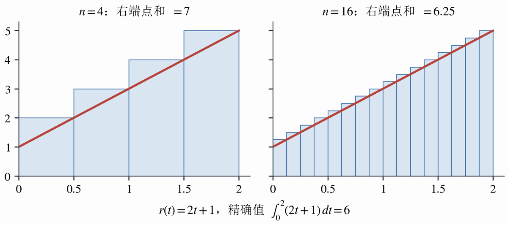
定积分允许被积函数取负值，负的贡献会从正的贡献中扣除。对速度积分得到的是位移，而不是路程。例如 在零到两秒内，前一秒速度为负、后一秒为正，位移相互抵消，总位移为零。路程则要对速度的绝对值积分：
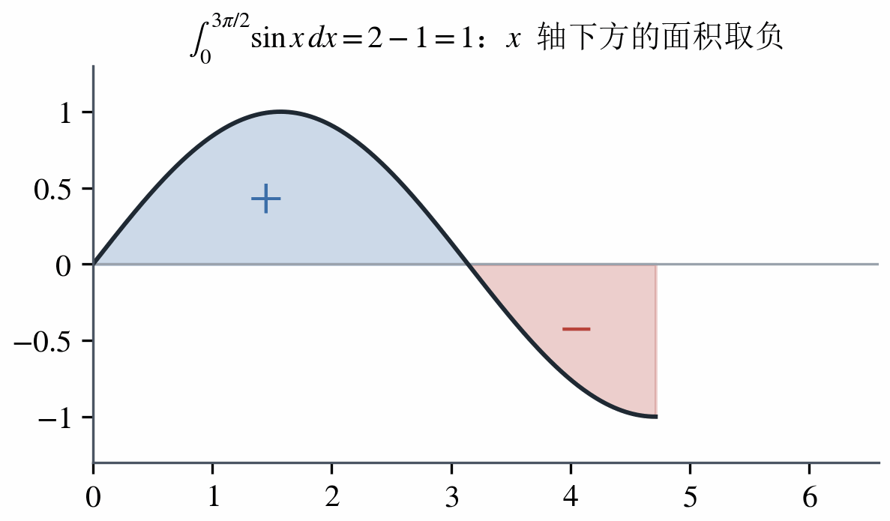
先找出被积函数变号的点，再分段积分，是把代数运算与几何累积联系起来的关键。同样，求两条曲线之间的面积，要用上方曲线减去下方曲线；若两条曲线在区间内交换上下位置，应先求出交点，再分段计算。
4.2 微积分基本定理的联系
对连续函数 f，定义累积函数（变上限积分）。自变量增加 h 时，累积量只比原来多出一个宽为 h 的窄条：
右边是窄条上函数的平均高度。h 很小时，由连续性，窄条内的函数值都接近 f(x)，所以平均高度趋于 f(x)，即 。这就是微积分基本定理的第一部分：积分与求导互为逆运算。若上限是 的函数，由链式法则，
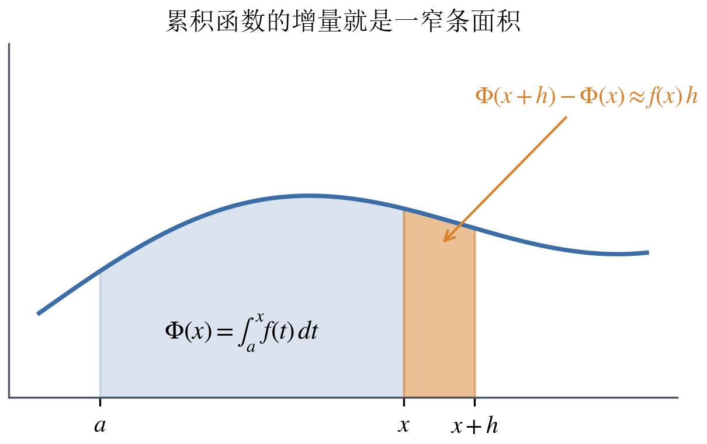
基本定理的第二部分由此得到：若 G 是 f 的任一原函数（即 ），则 F 与 G 的导数相同，两者只差一个常数；比较端点，得到牛顿—莱布尼茨公式 。它说明了为什么“先求原函数、再代入上下限相减”能够计算原本由极限定义的累加量。
例如上面的速率 的一个原函数为 ，从零到两分钟的差为 ，恰好与累加极限的结果一致。原函数中的任意常数在上下限相减时抵消；但在不定积分中必须保留，因为所有相差常数的函数都有同一个导数。
4.3 积分计算中的结构选择
换元积分法的目的，不是让符号看起来简单，而是把复合函数的内层连同它的变化率一起换成新变量。计算 时，令 ，则 du=2x dx，上下限同时变为零和一，所以结果为 。如果只把指数改成 u，却遗漏了 2x dx 与 du 的对应关系，就不是等价的变换。定积分换元时，上下限要随之改为新变量的值，这样就不必再换回原变量。
分部积分法来自乘积的求导法则 。两边积分并整理，得到 。计算 时，选 u=x、dv=e^x dx，求导使一次多项式的次数降低，结果为 。如果选择反过来，新的积分反而更复杂，就应重新判断。选择 的一般经验是按“反三角函数、对数函数、幂函数、指数函数、三角函数”的顺序，排在前面的作为 。
并不是所有原函数都能写成有限个初等函数的组合，例如 的原函数。因此，会求积分并不意味着所有积分都必须化成初等表达式；可以借助定义、对称性、估计或数值方法。对积分区间无限或被积函数无界的积分，还要另外取极限检验是否收敛（见 4.8 节），不能把无穷符号当作普通的端点直接代入。
4.4 基本原函数与常数
求原函数可以逐项反查导数公式。在各自连续的区间内，有
幂函数积分在更大实数定义域上的适用情况与求导相同；含三角函数分母的式子只能在避开零点的区间内使用。若被积函数的定义域不连通，各段上的原函数可以有不同的常数。例如 的定义域在正、负半轴之间断开，不能因为导数相同就要求两段的常数也相同。
带参数的公式，可以通过换元推导，而不要凭感觉猜分母。设 ，令 ，则 ，得
同理，，要求 。两个公式中 a 的因子不同，是因为平方项和根号对缩放的反应不同。把结果求导，是最直接的检查方法。
基本积分表还应补充以下几个常用公式（）：
第一式由 换元 得到；第四式先把被积函数拆成部分分式 ；最后一式可用三角换元 推出（见 4.6 节）。每个公式都可以用求导来验证。
4.5 三角结构、分部积分与递推
三角恒等式常常能把难求的积分变成基本形式。由倍角公式可以得到降幂公式：
所以 ，而余弦平方的积分是 。两式相加应为 x 加常数，这与 一致，可以作为检查。
由降幂公式还可以直接表示半角的正弦和余弦：
正负号由 所在的象限决定，不能因为来自平方关系就擅自取正号。在分母有定义时，还可以写 ；两种分式在不同的点可能失去定义，遇到零分母时应换用另一种有定义的形式，或者取极限。
分部积分可以继续推导出一族递推关系。记 （n 为正整数），取 ，得到
每用一次，次数降低一，最终回到基本积分。例如
检验：对右边求导，，括号自身的导数恰好补回 ，消去中间各项。递推式描述的是原函数族之间的关系，任意常数只需在最后的结果中统一保留一个。
正弦和余弦的高次幂在零到 上的积分也有递推关系。记 ，分部积分可得 ，由 、 出发，得到沃利斯公式：
其中 表示与 同奇偶的正整数的连乘，如 。例如 。
4.6 有理函数与三角换元
有理函数的积分。 两个多项式之比称为有理函数，它的积分总可以化为初等函数。步骤是：
- 若分子次数不低于分母，先做多项式除法，化为多项式加真分式（分子次数低于分母）。
- 把分母分解为一次因式和不可约二次因式的乘积。
- 把真分式拆成部分分式：每个一次因式 对应 ；重因式 对应 ；不可约二次因式对应 。
- 用比较系数或代入特殊值求出待定系数。
- 逐项积分：一次因式给出对数，二次因式配方后给出对数与反正切。
例如 。两边乘以 ，得 ；令 得 ，令 得 。所以
三角换元。 被积函数含有二次根式时，可以用三角换元把根号去掉，依据是 、：
- 含 ：令 ，则 （）。
- 含 ：令 ，则 。
- 含 ：令 ，则 。
换元后求出关于 的积分，再借助直角三角形把 的三角函数换回 。例如 ，令 ， 从零到 ，积分变为 ，正是四分之一圆的面积。
万能代换。 对三角函数的有理式，可以令 ，这时 、、，积分化为 的有理函数。这组关系只在代换有定义的区间内使用，跨过 等奇点时必须分段，不能把这个局部参数当作覆盖整个圆的单一坐标。另外，半角公式 常可用来消除分子分母中的相消。
4.7 定积分的性质与应用
基本性质。 定积分对被积函数是线性的，对区间是可加的：
此外，交换上下限积分变号；若在区间上 ，则积分也满足 ；由此有 。积分中值定理指出：若 在 上连续，存在 使 ，即曲线下的面积等于以某个函数值为高的矩形面积， 称为函数在区间上的平均值。
对称性。 在关于原点对称的区间上，奇函数的积分为零，偶函数的积分是半区间的两倍：
周期为 的函数在任何长度为 的区间上积分都相等。例如 ，不必计算。
几何与物理应用。 定积分的应用都遵循同一个思路：把所求的量分成许多小份，写出一小份的近似值（称为微元），再积分。常用的公式有：
旋转体体积的微元是半径为 、厚度为 的薄圆片，体积为 ；弧长的微元由勾股定理 得到。例如把 （）绕 轴旋转，体积为 。半径为 的球可以看作半圆 绕 轴旋转，体积为 。
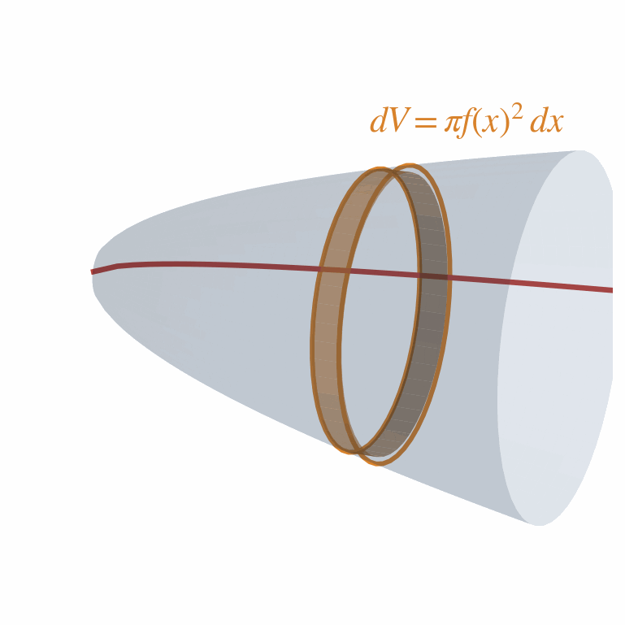
变力做功。 弹簧的弹力 ，从 到 做的功为
不能把变力取某个端点的值再乘以整个位移，除非明确是在做近似。力对位移积分得到功，力矩对时间积分得到角动量的变化，力矩对转角积分得到转动中的功。被积函数形式相似时，积分变量和单位能够区分它们。
4.8 反常积分
积分区间无限，或被积函数在区间内无界的积分，称为反常积分（广义积分）。它们要用极限来定义：
极限存在且有限时称积分收敛，否则发散。最重要的基准是 ：
两者的条件恰好相反：在无穷远处，函数要衰减得足够快（）面积才有限；在零附近，函数要增长得不太快（）面积才有限。 时两者都发散，因为原函数是 。判断其他反常积分时，常与这个基准比较：若 且 收敛，则 收敛。例如 ，所以收敛（实际值为 ）。
第五章 数列与无穷级数
5.1 级数收敛是部分和收敛
对无穷级数 ，先定义前 项的部分和 。只有当部分和数列 收敛到一个有限值时，才说级数收敛，这个值就是级数的和。由 可知，级数收敛时必有通项 。但反过来不成立：通项趋于零的级数可能发散，因为许多很小的项仍可能累积成无界的和。所以“通项趋于零”只是收敛的必要条件，常用于判断发散：通项不趋于零，级数一定发散。
例3：调和级数与几何级数。 调和级数 的各项趋于零，但把它分组：
从 到 的一组共有 项，每一项都至少为 ，所以每组的和至少为二分之一。组数可以无限多，部分和无界，因此调和级数发散。
几何级数的有限和 ，乘以 后相减，得 。若 ，，所以和为 。若 ，部分和线性增长； 时部分和在零和一之间来回； 时通项甚至不趋于零。这些情况下级数都不收敛。
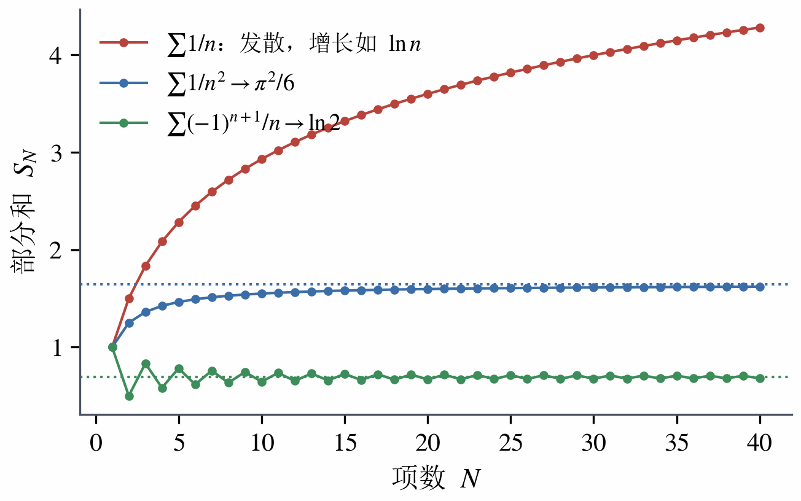
5.2 正项级数的判别法
对各项非负的正项级数，部分和单调递增，所以只要部分和有上界，级数就收敛。由此得到比较判别法：若 ，且 收敛，则 收敛；反之若 发散，则 发散。常用的比较基准是 p 级数 ：它在 时收敛， 时发散。这个结论可以由积分判别法得到： 在正半轴上递减，把级数各项看作宽为一的矩形面积，与曲线下的面积比较，级数与反常积分 同时收敛或发散（见 4.8 节）。
例如 ，所以 收敛。还可以把它拆成 ，部分和中间各项相消，等于 ，极限恰为一。
比较时，比较的极限形式往往更方便：若 且 ，，则两个级数同时收敛或同时发散。例如 与 的比值趋于一，所以收敛。
比值判别法与根值判别法。 设 或 。若 ，级数绝对收敛；若 ，级数发散；若 ，判别法失效，不能作结论。例如 与 的比值极限都是一，结局却一个发散、一个收敛。比值判别法适用于含阶乘和指数的项，如 ：比值为 ，所以收敛。根值判别法适用于含 次幂的项，如 ： 次根趋于 ，所以收敛。
判断级数敛散性的一般顺序是：
- 检查通项是否趋于零；不趋于零则发散。
- 若是几何级数或 p 级数，直接用已知结论。
- 正项级数：含阶乘、指数时用比值判别法；含 次幂时用根值判别法；通项是代数式时，与 p 级数作比较或用比较的极限形式。
- 交错级数：先看绝对值级数是否收敛；若不收敛，再用莱布尼茨判别法判断是否条件收敛。
- 能拆项相消或求出部分和时，直接求部分和的极限。
5.3 交错级数、绝对收敛与端点
若 从某项起单调递减且趋于零，则交错级数 收敛，这称为莱布尼茨判别法；并且只取前 N 项时，余下部分的绝对值不超过下一项 。理由是相邻的正负项互相抵消，偶数项部分和与奇数项部分和分别从两侧夹逼同一个极限。若只知道各项符号交替，却没有“趋于零且递减”的条件，不能直接使用这个判别法。
收敛，但它的绝对值级数 发散，这种情况称为条件收敛； 的绝对值级数也收敛，称为绝对收敛。绝对收敛的级数可以任意改变各项的次序而和不变；条件收敛的级数则不能随意调换无穷多项的次序，否则和可能改变。
幂级数 是否收敛，随 x 的取值而变。存在一个收敛半径 ：当 时绝对收敛，当 时发散；R 可以为零，也可以为无穷大。收敛半径常用比值法求出：若 ，则 。在 的两个端点，必须逐个代回原级数检查。例如
的比值极限为 ，所以收敛半径为一。 时为发散的调和级数， 时为收敛的交错调和级数，所以收敛区间为 。在收敛区间内部可以逐项求导或逐项积分，收敛半径不变，但端点的收敛性要重新检验。这个讲法的次序参照了 OpenStax《微积分》第二卷 6.1 与 6.2，例子在本册中独立展开。
第六章 泰勒公式与高阶极限
6.1 阶数来自误差要求
导数给出的是一阶近似，用一条直线逼近函数。若需要更高的精度，可以用多项式来逼近：在 附近，足够光滑的函数可以写成
多项式的系数这样选取，是为了让多项式在 点的各阶导数（直到 阶）都与函数相同。记号 表示一个比 更高阶的小量，即 。另一个记号 只保证它的绝对值不超过常数乘以 ，除以 后不一定趋于零。例如计算分母为四阶无穷小的极限时，必须知道分子展开中的四阶系数，并把余项控制为比四阶更高的阶。
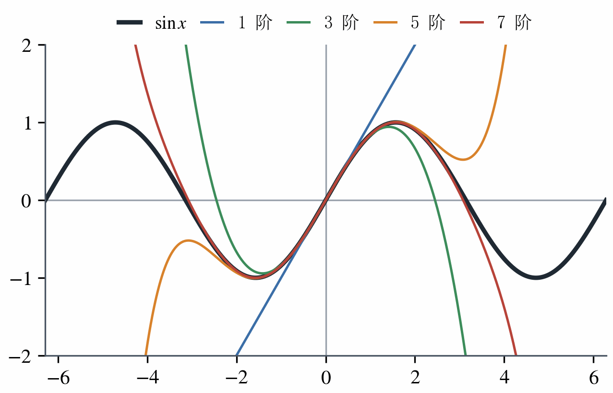
在零点附近（，这时称为麦克劳林公式）常用的展开有
三角函数的展开以弧度为单位。若自变量用角度，导数和展开系数都要乘上相应的单位换算因子。2.3 节的等价无穷小都可以从这些展开的第一项读出。
6.2 等价替换与相消
表示两者之比趋于一。在乘除结构中，若各个表达式都有定义，通常可以用等价量替换。但在加减结构中，最低阶的项可能相互抵消，这时替换会出错。例如 ，但不能因此把 直接替换成零；实际上 的第一个非零项是 ，所以 。规则是：加减运算中出现相消时，要用泰勒展开到第一个不被抵消的阶数。
例7：复合对数的四阶展开。 令
在零附近，对数的真数为正。设 ，则
代入 ，按 的次数整理系数：一次项为一；二次项为 ；三次项为 ；四次项为 。所以
要使极限有限，分子中二次和三次项必须被消去，所以 、，此时 。展开到几阶由分母的阶数和相消的程度决定，不能一律只保留前两项。
6.3 从有限展开到误差与常用函数族
有限阶的泰勒公式只描述点附近的误差，并不自动保证无穷项的泰勒级数等于原函数。在具有足够阶连续导数、且下一阶导数有界的区间中，拉格朗日余项给出误差的具体大小：
其中 在 a 与 x 之间，M 是这一段上第 阶导数绝对值的上界。例如用 估计 ，取 ，误差小于 。只说“后面都是高阶项”并没有给出这样的数值保证。
除了指数、正弦、余弦和对数的展开，另外几组常用的展开是
这些都是 时的局部展开；一般实数指数的第二式在零附近要求 。例如 得到平方根的展开 ， 得到 的交错幂级数。把自变量换成 u 时，必须同时检查 和需要保留的阶数。若 ，u 的三次就是 x 的六次，不能仍按三阶处理。
把这些展开写成无穷级数，并标出它们等于原函数的范围：
由第二行的对数级数取 ，得到 ，这正是 5.3 节的交错调和级数的和。
第七章 多元微分、梯度与总导数
7.1 偏导与可微
多元函数 依赖几个变量。偏导数 （也写作 ）是固定其余变量、只让 变化时的变化率，计算时把其他变量当作常数。可微则要求更强的条件：总的增量存在一个统一的一阶线性近似
线性部分称为全微分，记作 ，可以用来做近似计算和误差估计。仅仅各个偏导数存在，并不能保证可微；偏导数在附近连续，是可微的一个常用充分条件。若二阶混合偏导数连续，它们与求导次序无关：。
梯度把各个偏导数组成一个向量 ，而不是把三个数直接相加。沿单位方向 的方向导数，在可微的条件下等于 。由点积的性质，方向导数在梯度方向上取得最大值 ，在相反方向上取得最小值 。所以梯度指向函数增长最快的方向。在等值面（ 取常数的曲面）上沿切向移动时，函数值不变，切向的方向导数为零，因此梯度垂直于等值面；但在梯度为零的点，不能据此确定唯一的法方向。
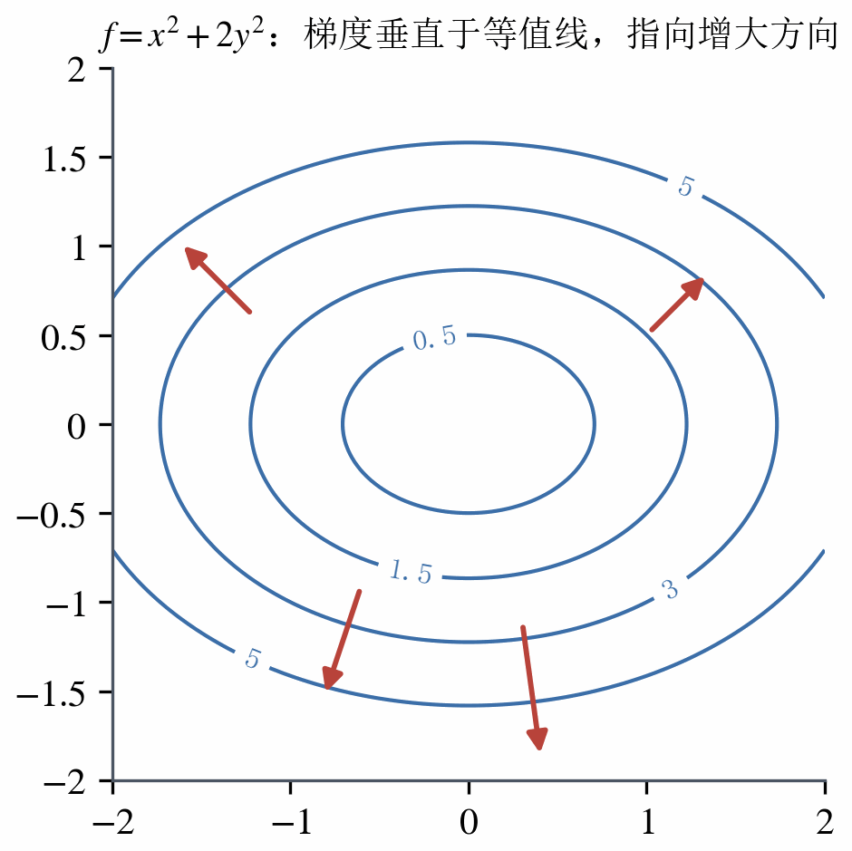
例10：沿轨迹的变化率。 对 ，在点 处梯度为 。若运动速度为 ，由链式法则，；若速度改为 ，结果为二十。梯度相同，实际的变化率仍随运动方向而变。
7.2 多元复合函数的链式法则
若 ，而 又都是 的函数，则
记忆方法是：从 到 的每一条路径（ 和 ）贡献一项，各项是沿路径的偏导数之积，再把各路径相加。
若 除了通过位置 依赖时间外，还直接含有时间，则沿运动轨迹的变化率为
第一项是在固定位置观察到的、场本身随时间的变化；第二项是因为位置在移动、采样到不同点的数值而产生的变化。例如 ，沿轨迹 运动，直接代入得 ，导数为 。按链式法则，，，两项相加为 ，结果一致。只算偏导数会遗漏位置移动带来的变化；而把所有偏导数直接相加，又会遗漏各变量自身的变化率。
7.3 隐函数的导数
若方程 在某点附近确定了 是 的函数，对方程沿这条曲线求全导数，得 ，所以
条件 是隐函数存在定理的核心：它保证在该点附近，方程确实能唯一确定一个可导的函数 。三个变量的方程 确定 时，类似地有 、。例如圆 ，，与 3.2 节的结果一致。
7.4 多元函数的极值
二元函数 在可微的极值点处，两个偏导数都为零：，这样的点称为驻点。判断驻点的类型，要看二阶偏导数。记 、、（在驻点处取值），则
时需要另外分析。这个判别式正是二阶偏导数组成的对称矩阵（黑塞矩阵）的行列式，与《线性代数》中二次型正定的顺序主子式判别法完全一致。例如 ：由 、 解得驻点 ；， 且 ，所以是极小点，极小值为 。
条件极值与拉格朗日乘数法。 在约束 下求 的极值，可以构造拉格朗日函数 ，令它对各变量的偏导数都为零：
前两式的几何意义是 ：在约束曲线上的极值点处， 的等值线与约束曲线相切。如果两者不相切，沿约束曲线移动还能使 继续增大或减小。例如在周长约束 下最大化矩形面积 ：、，所以 ，与 3.6 节的结论一致。
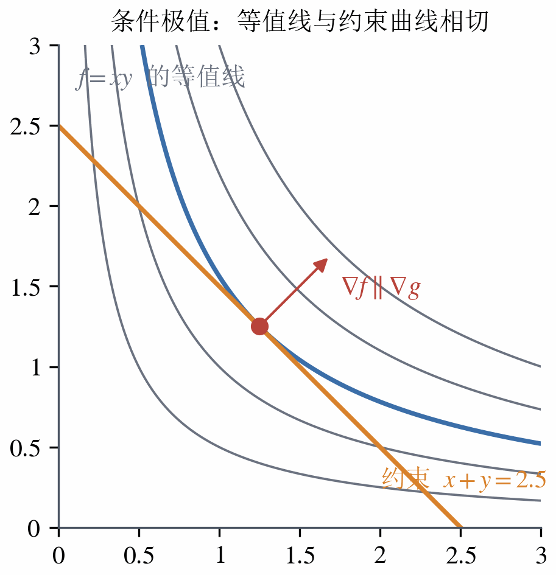
求多元函数极值的步骤是：
- 无约束时，解方程组 求出驻点。
- 对每个驻点计算 ，用判别式判断是极大、极小还是鞍点。
- 有约束时，用拉格朗日乘数法列出方程组，求出可能的极值点。
- 在有界闭区域上求最值时，还要比较边界上的极值，取全部候选点中的最大和最小者。
第八章 一阶微分方程
8.1 可分离方程与初值
微分方程是含有未知函数及其导数的方程，未知量是一个函数，而不是一个数。方程中出现的最高阶导数的阶数，称为方程的阶。初始条件给出未知函数（或它的导数）在某一点的值，用来从无穷多个解中选出一个。
形如 的方程称为可分离变量方程。在 的区间内，把含 的部分移到一边、含 的部分移到另一边，两边积分得 。但要注意，除以 时已经假定它不为零；使 的常数函数 也是方程的解（称为平衡解），必须另行检查，否则会漏解。
例如 ：在 时分离变量积分，得 ，整理为 （）。补上 ，才把零解 也包括进来。给定 ，得 。初始条件是从函数族中选出一条曲线，不能省去常数而声称得到了全部解。
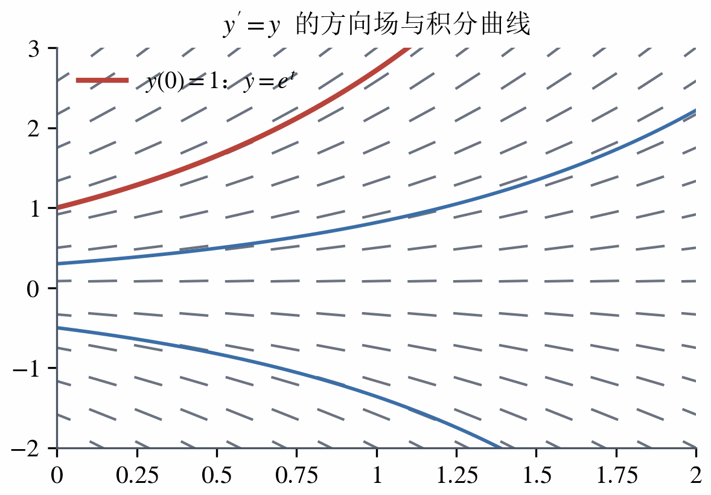
齐次方程。 形如 的方程（右边只依赖 ），令 ，则 、，方程化为 ，这是关于 的可分离方程。例如 ：令 ，得 ，，所以 。
8.2 线性方程的积分因子
形如 的方程称为一阶线性方程，因为 和 都以一次方出现。在系数连续的区间内，取积分因子
因为 ，方程两边乘以 后，左边恰好成为乘积的导数：。于是 ，两边积分得
用于初值问题时，更方便的写法是
例11：含非恒定输入的初值问题。 解 、。可以用积分因子，也可以先猜特解：设 ，代入得 ，即 ，比较系数得 。对应齐次方程 的解为 ，所以通解为 。由初值 得 ，最终 。检验：，，且 ，两个条件都满足。
伯努利方程。 形如 （）的方程不是线性的，但令 ，则 ，方程两边乘以 ，化为关于 的线性方程 ，再用积分因子求解。
例： 解 。这里 ，令 ，方程化为 ，解得 ，所以 。另外 也是解（在两边乘以 时被除掉了）。
解一阶微分方程，先判断类型：
- 能写成 ：可分离变量，并检查平衡解。
- 右边只依赖 ：齐次方程，令 。
- 形如 ：线性方程，用积分因子。
- 形如 ：伯努利方程，令 化为线性方程。
- 求出通解后，代入初始条件确定常数，并把解代回原方程检验。
8.3 RC 电路的暂态与稳态
串联 RC 电路中，电容上的电荷 满足 ，其中电流是 ， 是电源电压。设 ，令 （ 称为时间常数），电源为正弦电压 ，方程化为
由于输入是正弦函数，猜测特解也是同频率的正弦与余弦的组合：设 。代入后分别比较 和 的系数，得 、，解得
若 ，代入得 。解由两部分组成：指数项随时间衰减，反映初始状态的影响，称为暂态；周期项是持续的输入留下的响应，称为稳态。经过几个时间常数后，只剩稳态部分。“特解加齐次通解”能给出全部解，是因为任意两个非齐次方程的解之差满足齐次方程；这依赖于方程的线性，不能推广到一般的非线性方程。
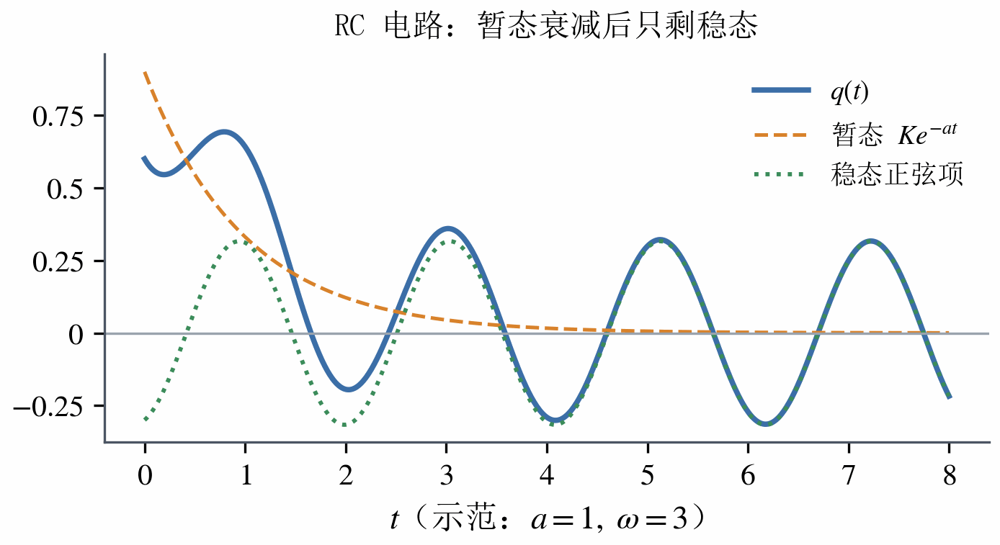
第九章 二阶线性方程与小振动
9.1 常系数齐次方程
对常系数齐次方程 ，猜测解的形式为 。代入后，每一项都含有因子 ，约去得到特征方程 。根据特征根的情况，通解有三种形式：
重根时只有一个指数解，第二个独立解是 ，可以代入验证。复根时，由欧拉公式 ，复指数解的实部与虚部分别给出两个实数解。二阶方程的通解含两个任意常数，通常需要两个独立的初始条件（如 和 ）才能确定。
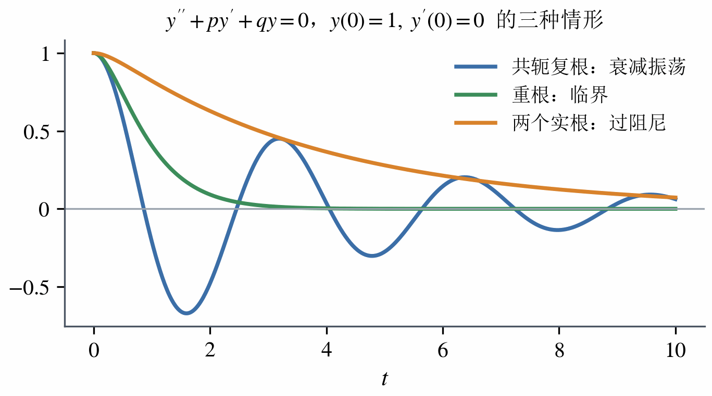
例12：阻尼振动的初始条件。 解 、、。特征方程 的根为 ，所以 。由 得 ；求导后令 ，得 ，所以 。于是 。振幅按指数包络 衰减，振荡的角频率为二。不能把无阻尼时的角频率 当作实际的阻尼振荡频率。
9.2 常系数非齐次方程
对非齐次方程 ，通解等于对应齐次方程的通解加上一个特解。当右边 是多项式、指数函数、正弦余弦或它们的乘积时，可以用待定系数法猜出特解的形式：
- （ 是 次多项式）：设特解 ， 是待定系数的 次多项式。
- ：设特解 ，即使 中只有正弦或只有余弦，也要两项都设。
- 指数 等于 （或 ）作为特征根的重数：不是特征根时 ，是单根时 ，是重根时 。
第 3 条是关键。若外加输入的形式恰好是齐次方程的解，按普通形式设出的特解代入后左边为零，无法与右边匹配，必须乘以 。物理上，这对应共振：用系统的固有频率去驱动无阻尼系统，振幅随时间线性增长。
例：共振。 解 。特征根为 ，而 对应 正是单根，所以设 。代入计算得 ，与 比较得 、。特解为 ，振幅随 线性增长。通解为 。
解二阶常系数线性方程的步骤是：
- 写出特征方程，求特征根，写出齐次方程的通解。
- 若方程非齐次，按右边的形式设出特解，注意与特征根比较确定 的因子。
- 把特解代入方程，比较系数，求出待定系数。
- 写出通解 = 齐次通解 + 特解。
- 由两个初始条件确定两个常数，并把结果代回原方程检验。
9.3 平衡点附近的小振动
势能的平衡点附近也会出现这类方程。若 、，令 表示偏离平衡位置的位移，泰勒展开给出 ，即平衡点附近的势能近似为抛物线。由牛顿第二定律 ，得 ，其中 。这是简谐振动方程，解为正弦振荡。例如弹簧势能 ，得到 。若 ，平衡点是不稳定的，偏离会指数增长。若二阶导数为零，二阶近似失去判断能力： 在零处取最小值、是稳定的， 在零处取最大值、是不稳定的，不能用同一个“二阶导数为零”的结论概括两者。
第十章 变分与欧拉—拉格朗日方程
10.1 从变量变化到函数变化
普通函数把一个数映为一个数；泛函则把一整条函数曲线映为一个数，例如
曲线的长度、物体运动的作用量都是这样的泛函。变分法研究哪条曲线使泛函取得极值，相当于把“求函数的极值点”推广为“求泛函的极值曲线”。
比较一条曲线 与它附近的曲线 ，其中 是任意的扰动函数， 是一个小参数。在固定的区间上，把 在 处的值定义为一阶变分，它相当于普通函数的导数。对足够光滑的函数，展开并交换求导与积分的次序，得到
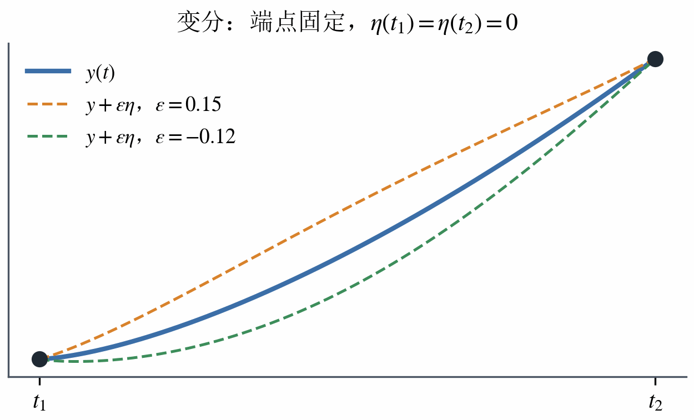
第二个等号用了分部积分，目的是把 变成 ，这样被积式中只剩一个任意函数 ，它的系数才能单独判定。若端点固定，则 ，边界项为零。要使 对一切 成立，括号中的式子必须恒为零，于是使泛函取驻值的曲线满足欧拉—拉格朗日方程
当 不显含 时，方程有一个首次积分（别尔特拉米恒等式）：，它把二阶方程降为一阶，在求最速降线、悬链线等问题时很有用。
10.2 端点条件与驻值的含义
若端点的时间固定，但末端的函数值可以自由变化，则 可以任意取值，边界项为零就要求 ，这称为自然边界条件。若端点的时间也可以变化，就必须连同积分区间的变化一起计算，不能继续沿用这个简单的形式。对拉格朗日量 ，沿满足运动方程的曲线，移动端点时边界变分可以写成 ，其中 是广义动量， 是能量函数。这里的 是端点位置的总变化，要与固定时刻下曲线本身的变化区分开。
例13：完整比较驻值和最小值。 对 ，固定 。这里 ，，，欧拉—拉格朗日方程为 ，结合端点条件得 。这只是驻值曲线，还需要检查它是否真的最小。任取端点相同的曲线 （），则
中间的线性项积分为 ，所以这个驻值确实是全局最小值。对一般的泛函，这一步的非负性不一定成立，欧拉—拉格朗日方程只是取极值的必要条件，不是充分条件。
在端点时间和端点位置都固定的力学问题中，给拉格朗日量 加上一个全导数 ，作用量只增加 在两个端点的差值，这是一个常数，所以变分不变，运动方程也不变。但若端点是自由的，这个端点差可能影响自然边界条件。因此“可以删去全导数项”有明确的前提条件，不能理解为在任何场合都可以任意删项。
来源与范围
本册的实际课程依据为《求极限》《线代与微积分练习》《解释梯度概念》《正切半角公式》《翻译数学模型内容》以及变分、势能和电路相关的可读会话。first CC 现有清单中没有独立的数学分析教材；费曼讲义和朗道《力学》在本册中用于提供物理应用的背景，不表示已通读这些数学原著。另核对了 OpenStax Calculus Volume 1 第一章的函数先修结构，以及 5.1 节从有限分割累加到面积近似的展开顺序（https://openstax.org/books/calculus-volume-1/pages/1-introduction 与 https://openstax.org/books/calculus-volume-1/pages/5-1-approximating-areas）。这里只借鉴了教学顺序，正文和例题都是独立编写的。本册的数学推导按课程主题和连续的学科结构展开；为保证知识体系完整而补充的内容包括极限定义、重要极限与等价无穷小、洛必达法则、导数应用与凹凸性、积分方法与积分表、有理函数积分、定积分的性质与应用、反常积分、级数判别法、多元函数极值与拉格朗日乘数法、伯努利方程和二阶非齐次方程等。
俄语术语包括 предел（极限）、производная（导数）、интеграл（积分）、градиент（梯度）、дифференциальное уравнение（微分方程）。本册为继续学习物理与控制提供所需的基础，没有把多重积分、完整的向量分析、偏微分方程或严格的变分法当作已经覆盖的内容。
下一册 · 大学物理